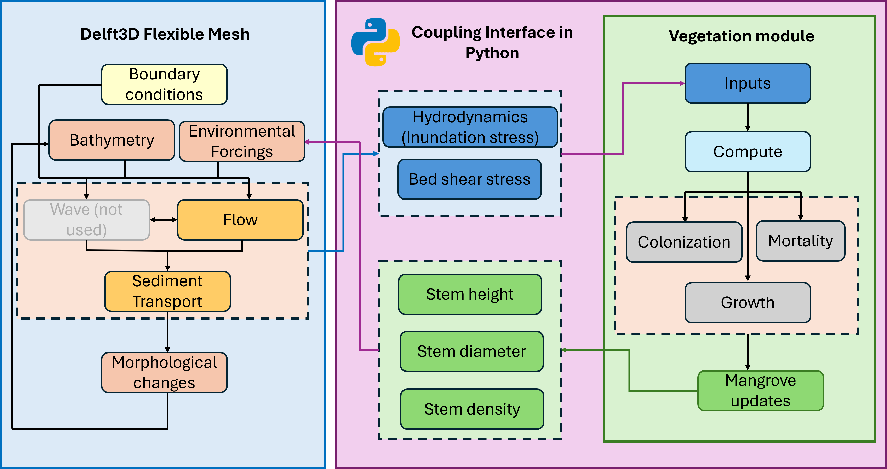

4 Approach: Dynamic Modelling Framework
4.1 Overview
To predict the distribution and long-term resilience of key intertidal habitats—specifically mangrove forests and cyanobacterial (algal) mats, it is essential to understand the primary physical and ecological drivers governing their dynamics. As established in Chapter 3, coastal ecosystem controls across the Pilbara region include hydrodynamics (water levels, flow velocities, and bed shear stress), salinity, surface temperature, light availability, microtopography, and sedimentation rates. All of these factors interact to determine habitat suitability, colonisation boundaries, and ecological persistence.
When evaluating long-term ecosystem responses to sea-level rise (SLR), accounting for morphodynamic adjustments becomes critical. Long-term changes in inundation duration and depth are not solely dictated by the rate of SLR, but also depend on intertidal topography and eco-morphological feedbacks, which are in turn governed by hydro-sedimentary boundary forcings including tidal range, wave action, and sediment supply (FitzGerald et al., 2008; Passeri et al., 2015; Xie et al., 2022). Mangrove forests and algal mats can only tolerate specific durations and frequencies of tidal submersion (Woodroffe et al., 2016). Because hydrodynamic shifts under SLR continuously reshape intertidal morphodynamics, these physical and biological processes must be modelled in a dynamically coupled, two-way manner.
While state-of-the-art numerical engines (e.g., Delft3D Flexible Mesh, SCHISM, MIKE) robustly resolve process-based hydro-sedimentary interactions, top-down parameterisations of vegetation and benthic ecological dynamics within these standard frameworks remain overly simplified.
4.2 Advances and Limitations in Eco-Geomorphic Modelling
To bridge the gap between physical and ecological processes, hybrid and coupled eco-geomorphic (bio-hydro-morphodynamic) frameworks have been developed to simulate vegetation expansion, retreat, and decadal eco-geomorphic evolution (Fagherazzi et al., 2012; Lesser et al., 2004). Notable examples include:
- Delft3D Flexible Mesh (DFM) coupled with the MesoFON individual-based mangrove model (DFMFON) (Beselly et al., 2023; Kernkamp et al., 2011).
- DFM integrated with custom MATLAB or Python vegetation modules (Willemsen et al., 2022; Xie et al., 2022).
- The BASEMENT hydro-eco-morphodynamic model coupled with the Python-based BASEveg vegetation module (Caponi et al., 2023).
Despite their ability to capture multi-way feedbacks between biological dynamics and hydro-morphology, existing coupled frameworks suffer from severe computational bottlenecks. Because they must resolve non-linear interactions across vast spatial and temporal scales, previous applications have been restricted either to idealised domains (Willemsen et al., 2022; Xie et al., 2022) or relatively small localized estuaries (Beselly et al., 2023). A scalable, process-based approach capable of modelling complex coastal systems and regional-scale domains has been unavailable.
4.3 Predictive Approaches for Target Habitats
4.3.1 Mangrove Eco-Geomorphology
Mangrove forests occupy the mid-to-upper intertidal zone and rely on a precise balance between inundation frequency, bed shear stress, sediment supply, and salinity. Within the coupled framework, mangrove dynamics are represented via process-based two-way feedbacks: DFM simulates the local hydrodynamic stress and bed level changes, while updated canopy density and root structures alter hydraulic roughness and attenuate wave and current energy. Due to numerical stability constraints, we did not include salinity in our coupled mangrove model.
4.3.2 Cyanobacterial (Algal) Mat Dynamics
Algal mats develop on supratidal and upper intertidal land surfaces subject to periodic inundation and local ponding, particularly salt flats, mudflats, and overbank basins adjoining tidal creeks (Engineering, 2021; Seashore Engineering, 2022; Taukulis et al., 2018). The ecological drivers regulating algal mat establishment, growth, and survival include hydroperiod (inundation duration and frequency), salinity, surface elevation, ambient temperature, light, sedimentation, and hydrodynamic bed stress.
In the semi-arid Pilbara region, the upper intertidal zone is exceptionally flat and only occasionally inundated. Microtopography (such as swash lines, low-relief sediment ridges, and sparse vegetation) causes localised ponding, where high evaporation rates generate hypersaline conditions favoured by opportunistic, nitrogen-fixing cyanobacteria (Engineering, 2021; Taukulis et al., 2018). Thick mats bind surface sediments, reduce bed permeability, and alter local drainage pathways.
Currently, no dedicated process-based numerical tools exist to simulate dynamic algal mat growth, colonisation, or two-way morphodynamic feedbacks. Existing predictions regarding the response of upper intertidal flats to sea-level rise do not explicitly account for biological algal mat interactions, but instead evaluate predicted changes to tidal flow distributions and disturbance regimes (Engineering, 2021; Townend et al., 2011).
Prior habitat prediction efforts relied primarily on static hydroperiod approaches—relating mapped mat distributions directly to tidal elevation contours and projecting linear upward shifts under SLR (Engineering, 2021). Under standard Pilbara conditions, both the upper limit (constrained by desiccation) and the lower limit (constrained by bioturbation and excessive inundation) shift landward with rising sea levels. However, local features such as low-relief sediment ridges alter hydroperiod dynamics, creating local non-linear responses that simple elevation-based projections cannot capture.
To address this limitation, our approach utilises the calibrated DFM hydro-morphodynamic model (which incorporates two-way mangrove-morphodynamic updates) to explicitly model future hydrodynamic and hydroperiod conditions suitable for algal mat survival. The hydrodynamic parameters governing inundation patterns and shear stresses are calibrated against present-day baseline conditions, using satellite-derived spatial mapping of observed algal mat locations (Hickey et al., 2025). The hydrodynamic model outputs are then evaluated against critical hydroperiod thresholds to predict potential areas of future algal mat colonisation, migration, or loss under SLR scenarios.
4.4 The Dynamically Coupled Bio-Hydro-Morphodynamic Framework
To overcome spatial and computational constraints, we developed an HPC-parallelised, dynamically coupled bio-hydro-morphodynamic modelling framework. This approach integrates Delft3D Flexible Mesh (DFM) (Kernkamp et al., 2011) with NBSDynamics (Nature-Based Solutions Dynamics) (Deltares, 2022), incorporating ecological parameterisation strategies adapted from Xie et al. (2022). Built using a custom Python coupling interface, the framework enables parallel execution on high-performance computing (HPC) clusters, facilitating broad regional-scale assessment without sacrificing process-based fidelity.

4.4.1 Model Integration and Information Exchange
As illustrated in Figure 4.1, the coupling operates through an iterative two-way exchange managed at defined coupling intervals:
- Hydrodynamic Forcing to Ecological Response: At each coupling step, DFM calculates spatially distributed physical variables across the intertidal zone, including water levels, flow velocities, inundation frequency/duration (hydroperiod) and bed shear stress.
- State Updates in NBSDynamics: These hydrodynamic outputs are aggregated and passed to vegetation module via the Python coupling interface to evaluate suitability for mangrove establishment, growth, stress, and mortality.
- Algal Mat Suitability Evaluation: As an offline approach, the DFM hydroperiod and bed shear stress outputs at different intervals of the SLR simulations are evaluated against eco-hydrodynamic thresholds calibrated from present-day satellite-derived mat distributions (Hickey et al., 2025) to delineate potential algal mat habitat zones.
- Ecological Feedback to Hydrodynamics: Updated mangrove vegetation properties (stem density, canopy height, spatial coverage) are translated into DFM-compatible input fields (spatially varying bed roughness and flow resistance).
- Morphodynamic Adjustment: DFM integrates these modified roughness fields into subsequent hydro-morphodynamic iterations, capturing how vegetation-induced drag alters flow patterns, attenuates wave energy, and regulates sediment deposition across the intertidal flat.
4.4.2 Long-Term Application to Sea-Level Rise
By explicitly linking biological growth mechanisms with process-based sediment transport and hydroperiod shifts, the framework models the capacity of intertidal habitats to adjust elevation relative to rising sea levels. The parallelised Python interface enables long-term decadal simulations across broad regional geometries, providing a robust quantitative tool to assess mangrove and algal mat resilience, landward migration, or localised collapse under future SLR scenarios.